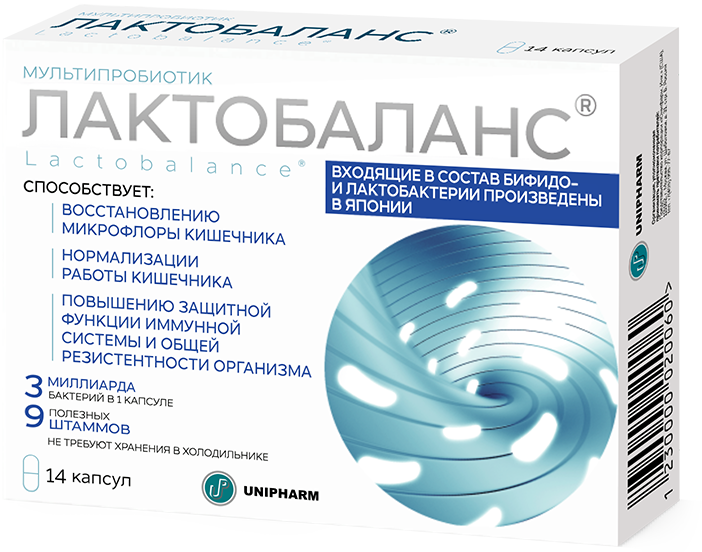

ЛАКТОБАЛАНС
Описание товара:
Сбалансированная комбинация пробиотиков (бифидо- и лактобактерий) производства Японии,
которая способствует восстановлению нормальной микрофлоры кишечника.
Характеристики препарата:
Входящие в состав мультипробиотика ЛАКТОБАЛАНС, бифидо- и лактобактерии способствуют:
- восстановлению и нормализации микрофлоры кишечника;
- нормализации кишечной микрофлоры в период приема антибиотиков;
- улучшению функций кишечника;
- снижению риска кишечных расстройств;
- уменьшению образования вредных веществ в кишечнике;
- поддержанию нормальной микрофлоры влагалища;
- повышению защитной функции иммунной системы.
Подробное описание:
Пробиотики — полезные микроорганизмы, оказывающие благоприятное влияние на организм,
благодаря нормализации состава или повышению активности нормальной микрофлоры кишечника.
Бифидобактерии снижают рост патогенных
микроорганизмов и создают благоприятные условия
для развития нормальной микрофлоры, активизируют иммунные клетки кишечника и снижают
выработку иммуноглобулина IgE, отвечающего за аллергические проявления, способствуют
синтезу витаминов группы В.
Благодаря лактобактериям снижается концентрация вредных веществ (аммиака, индола и фенолов).
Лактобактерии дополняют позитивное влияние бифидобактерий и способствуют улучшению усвояемости молочных
продуктов.
ЛАКТОБАЛАНС содержит картофельный крахмал, обеспечивающий сохранность и транспорт бифидо- и лактобактерий
по желудочно-кишечному тракту и стимулирующий их рост на слизистой кишечника.
Пробиотические
микроорганизмы, входящие в состав ЛАКТОБАЛАНС, сохраняют стабильность при комнатной температуре
в течение всего срока годности, не требуют хранения в холодильнике.
Состав препарата:
|
Активные компоненты: |
Количество: |
|
3 штамма живых лактобактерий: L. Gasseri KS-13, L. Gasseri LAC-343, L. Rhamnosus LCS-742 |
не менее 1×109 КОЕ |
|
6 штаммов живых бифидобактерий: B. Bifidum G9-1, B. Longum MM-2, B. Longum BB536 Strain M, B. Infantis M-63, B. Breve M16V Тип T, B. Lactis B1-04 |
не менее 2×109 КОЕ |